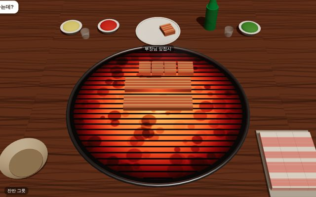
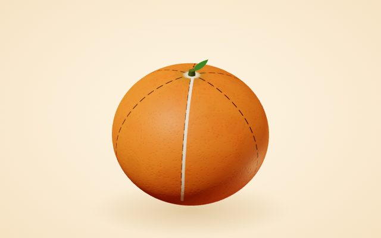
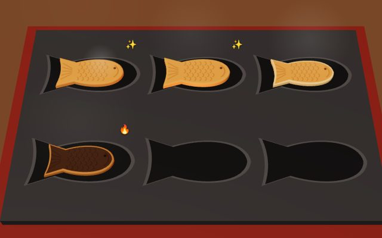

 3D 캐주얼타이밍 막내의 회식 부장님 앞접시를 비우지 마라. 삼겹살을 굽고, 뒤집고, 한입 크기로 잘라 대접해요. 한 판 2분, 탭과 드래그와 긋기 플레이 만든 이야기
 3D 캐주얼인터랙션 귤 까기 장인 모양 틀대로 귤을 까고, 펼쳐서 확인해요. 꽃부터 사람 모양까지 6가지. 한 판 25초에서 45초, 누르고 긋기와 굴리기 플레이 만든 이야기
 3D 요리 경영멀티태스킹 붕어빵 노점 밀가루부터 반죽해서, 팥과 슈크림과 고구마와 피자 붕어빵을 손님 주문대로 구워 팔아요. 한 판 90초, 틀 6개 동시에 굽기 플레이 만든 이야기